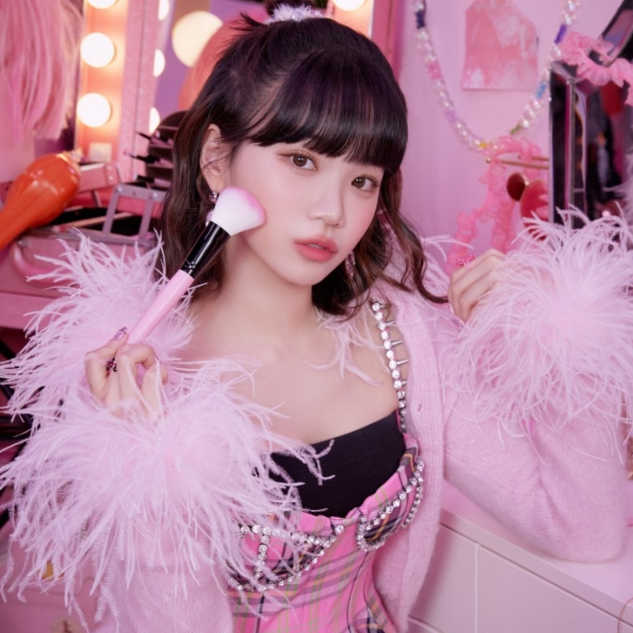
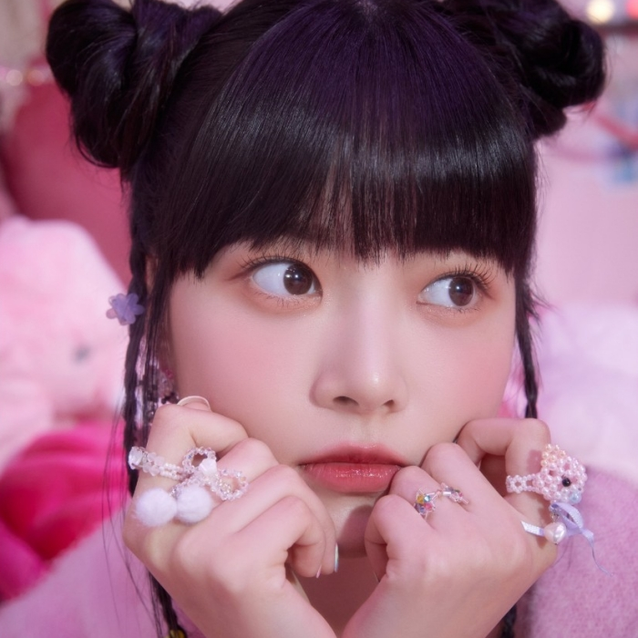
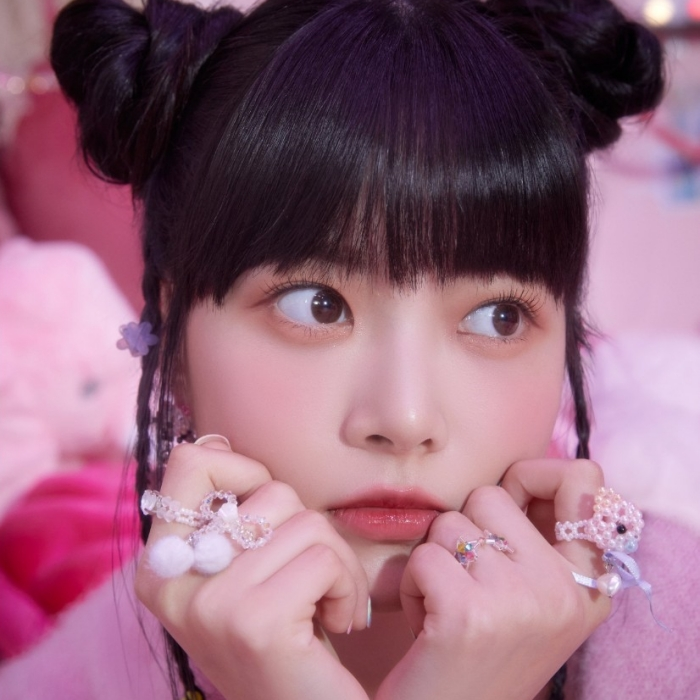
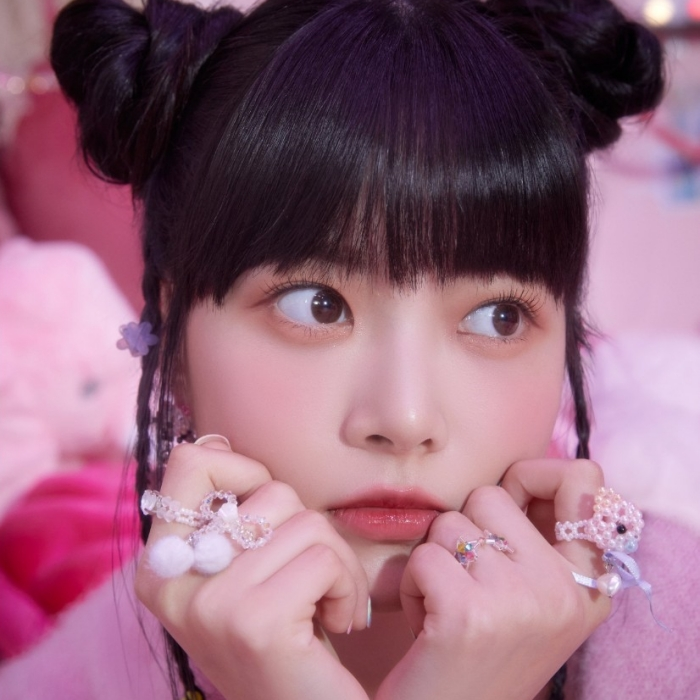

Member Pictures
 

Le Sserafim is a 5-member South Korean girl group
Their group's name, Le Sserafim is an anagram of the phrase "I'm Fearless"
Le Sserafim debuted May 2,2022 releasing their first title Fearless. They first debuted with 6 members. Unfortunately, ex-member Garam left due to bullying allegations

This is my top 3 (not in order) favorite songs by Le Sserafim